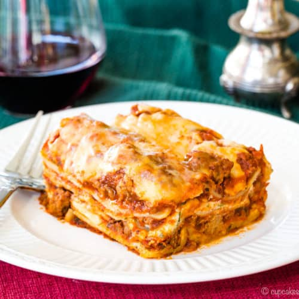
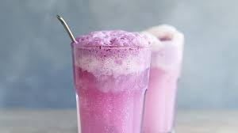

Four Cheese Spaghetti

AMAZINGLY creamy and so velvety with literally 4 different types of cheeses here!Let me just start by saying this.We are not counting calories when we make this dish. We just can’t.The only task involved here is to add in your butter, the four cheeses, and plenty of garlic.So no. Calories DO NOT count here.I mean, you can always throw in some kale or spinach but……Let’s just enjoy this!Let's me share you our recipes and absolutely you'll like it!
- spaghetti
- unsalted butter
- cloves garlic, minced
- tablespoons all-purpose flour
- milk
- heavy cream
- Italian seasoning
- shredded mozzarella cheese
- shredded fontina cheese
- shredded Gruyere cheese
- freshly grated Parmesan cheese
- Kosher salt and freshly ground black pepper,to taste
- fresh parsley leaves
- fresh chives
Lasagna

We took a couple shortcuts for this recipe by using store-bought marinara and boxed pasta sheets. It saves a ton of time without sacrificing any flavor. We think it's absolutely perfect as-is, but also understand some people are looking to make sauce from scratch. Use our best homemade spaghetti sauce,it'll NEVER let you down. Regardless of the route you go, make sure to follow these tips.DON'T OVERCOOK YOUR NOODLES.Lasagna noodles need structure,they have a lot of ingredients layered between them!so they can't be too mushy. Make sure to cook them until they're very al dente; they're ready typically two minutes before the amount of time on the box.OIL'EM UP.While you're making your beef and ricotta mixtures, your lasagna noodles will typically be hanging out in a colander, getting stuck together (worst nightmare). To prevent this, after you drain the noodles from the pasta pot, slick them with olive oil and lay them flat on a baking sheet to cool.DRAIN BEEF.Sometimes we're a little lasagna and skip this step when making a meat sauce and we always regret it—the sauce tastes so greasy! Draining the fat from the skillet is a must for your lasagna layers, which will already have a lot of fat from cheese.SEASON YOUR RICOTTA MIXTURE.My Italian grandmother always added a secret ingredient to her lasagna: cinnamon. The ricotta mixture always gets overlooked and, therefore, tastes kinda bland. Make sure to season it generously with salt and pepper—Parm, too!DON'T OVER BAKE.Lasagna is one of those dishes that firms up a lot as it sets. Even though it might look like a cheesy, bubbly mess in the oven, if it's warmed all the way through it will be perfect once you let it sit for like 15 minutes. When you over bake the pasta you run the risk of the noodles drying out and getting too crispy.You'll like our lasagna and will repeatly ordered it for sure!
Yam Float

The purple yam, once a culinary oddity, is now blowing up in dessert circles around the world. We love how food can bring together once two divergent worlds. Some ube ice creams use an artificial ube flavouring to enhance the purple colour, but this one is all-natural. Served as a stand-alone dessert, you’ll taste the subtle, enchanting flavour of ube even more.We serving this Yam Float because it is most of favourite dessert or menu in our cafe.
Rasberry Float

This is one of our customer favourite menu!Raspberry Cream Soda Float,treat yourself to this tasty ice cream float made with fresh raspberries and raspberry syrup.Let's me share with you about my cafe ingredients of this Rasberry Float.
- 1 cup heavy whipping cream
- 2 tbsp sugar
- 2 cups homemade raspberry syrup
- 6 cups soda water or seltzer
- Vanilla ice cream
- Fresh raspberries for garnish